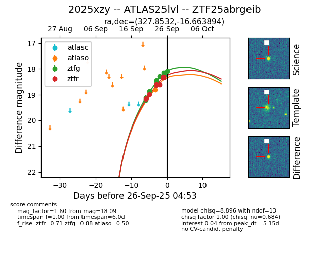
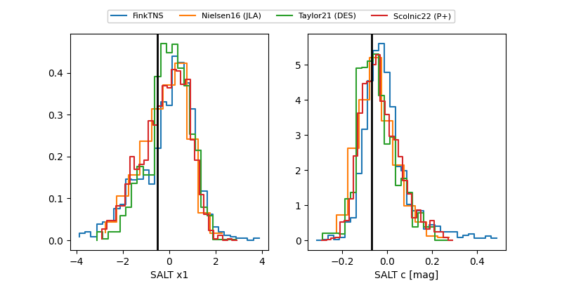

FINK: ZTF25abrgeib
Lasair: ZTF25abrgeib
ALeRCE: ZTF25abrgeib
TNS: 2025xzy
YSE: 2025xzy
ZTF25abrgeib (ztf,fink)
2025xzy (tns,yse)
ATLAS25lvl (atlas)
equatorial (ra, dec) = (327.8532,-16.66389)
galactic (l, b) = (37.4592,-47.18716)


last atlaso=18.81, ztfg=18.09, ztfr=18.35
1 atlaso, 9 ztfg, 8 ztfr detections